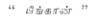
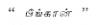
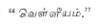
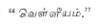

REVIEWS
Catalina: A Romance, by W. Somerset Maugham (William Heinemann Ltd.,
London. Price 10s. 6d. net.)
WE enter a library with the object of spending a
couple of hours with a favourite author either for profit or pleasure or for
both. A belief that reading maketh a full man is deep-rooted in every mind.
There are books written by men of genius and books by the merely talented. It
is a face beyond doubt that everyman has a partiality for fiction. Most of us
have our lives in unpleasant environments and under unpleasant circumstances
which are antagonistic to the natural instincts and impulses. But we all want
to have our little hour, to assert our little ego. It is this endeavour to
assert, this struggle of the sexes for completion and preservation which impels
a story-teller to rediscover the real pattern of our lives for us. The detached
attitude of the story teller affords his psyche that quality of freedom
essential to concentrate and record the experiences of those which are of value
to him.
In Mr. William Somerset Maugham we are face to face
with the personality of a true story-teller. He is an artist who never adorns
his characters while presenting them before those who admire him or merely take
him for granted. His latest bears a fascinating, musical title: Catalina.
He calls it a Romance.
Catalina, a beautiful girl, is in mad love with
Diego who happens to be the son of a tailor. But she loses his love when she
loses her leg–not being lopped off, but is stricken with paralysis. The
appearance of the Blessed Virgin who tells her that “the son of Juan Suarez de
Valero who has best served God has it in his power to heal her” strengthens her
faith in Friar Blasco de Valero whom the citizens of Castel Rodriguez think as
a great servant of God. The miracle doesn’t happen when the famous Bishop
orders her to throw her crutches off and walk. The vain and pompous Don Manuel
too fails in his attempt. The third son Martin, who by lack of culture and
economic necessity, had turned a baker, at the order of the eldest brother,
Bishop of Segovia, commands Catalina to cast off her crutches and walk. The
miracle succeeds. The Bishop is adored as a great soul full of humility and
penance. But why should Martin efface himself from the scene after the
wonderful and unexpected exhibition of a terrible spiritual potency in him? The
public hadn’t the sense to know that simplicity of heart could put to shame the
pomp of religious lore. The bishop comes to realise this truth late in life
when doubts tortured him. He tells Domingo, Catalina’s uncle (an unfortunate,
tragic character himself): “...Whatever others think, whatever I myself thought
for one rapt moment, it was not that performed the miracle, but Martin.” But
could Catalina marry Diego against the will of Dona Beatriz de San Domingo, the
Prioress who was noted for her severity in matters concerning religion and who
had the unbounded admiration of the nuns?
Dona Beatriz met with a crisis in her youth when
Bishop Blasco decided to starve his sex by entering the Church to serve God and
punish heretics. Maugham by these two characters brings the effects of
sublimation and starvation of the primordial instinct in man and woman. Should
a man or woman mortify the flesh and suppress the senses to see the face of
God? Was Catalina prepared for that? No. She saw the face of God in her Diego
Martinez. In order to win his love and bear his children and not to enter the
silent, gloomy cell of the nunnery she wept for the mercy of the Blessed
Virgin. She told the Prioress who sought ways and means to make her enter the
convent: “ Ah, madam, you say that because you have never known the pain and
bliss of love.” With the change that comes over that tranquil, lovely face a
terror strikes the heart of the Prioress. She gets back her lost, dry emotions,
feels them refreshing for a moment; they shake her to the very depths of her
being. The face of the “wasted, haggard priest” is reflected in her mind. A
decision is taken. A change comes upon her. She helps Catalina to marry Diego
Martinez.
Is sex so powerful as to change a decision and
shake a heart of steel? It is not the beast in the girl that is powerful to
effect the change. It is the unfulfilled desire. The instinct to possess and
preserve from alien influences is as strong, if not stronger, as the unethical
sex urge. The Blessed Virgin is present during the wedding of Catalina. But she
refuses to partake of the bread and wine. Why should Maugham introduce this
supernatural element in a romance which otherwise would have been quite ordinary?
Are we to take the appearance of the Virgin and the cure as acts of
self-deception? If so could Catalina have become an actress? Never! So it must
have been a reality. But Maugham calls the story “a strange, almost incredible,
but edifying narrative.” One is inclined to think that Maugham has a poor faith
in the conscience of man, while in woman he could rely to an extent even if she
be a jealous, greedy and power-seeking specimen as Dona Beatriz. With a pen
noted for its facility of expressing grand ideas, Maugham refuses to be a
genius. He refuses to say anything new and although a believer in artificial
simplicity he gives a natural touch to things deep in the depths of a
primitive’s conscience. Man emotionally is still primitive. And it is because
of this Maugham finds that only the stage could be the proper place for the
redeemed Catalina. It might be a complex or a natural twist which the author
might attribute to the ways of Destiny. It is for the individual reader to
judge whether Catalina is a Woman of Destiny or not.
“In my twenties the critics said I was brutal, in
my thirties they said I was flippant, in my forties they said I was cynical, in
my fifties they said I was competent, and now in my sixties they say I am
superficial.” Thus Maugham on himself in The Summing Up. Now he is past
seventy and so an impudent but worthy curiosity arises in us as to know what
exactly Maugham is at the present? Like true men of letters his fecundity and
powers of invention are still unabated; but the end of Catalina seems to
convince us that he has more a partiality for the stage–he has been a very
successful dramatist in an age which has produced the great Bernard Shaw–than,
for the novel. And Catalina is novel plus something of the stage and the
technicolour movie.
M. S. GOPALAKRISHNAN
The Open Society and Its Enemies, Volumes I and II. Volume I: Spell of
Plato. Volume II: The High Tide of Prophecy. Hegel and Marx, by Dr. K. R.
Popper, Reader in Logic and Scientific Method in the University of London. (George
Routledge & Sons Ltd., London. Price £ 2-2sh.)
DR. POPPER is one of the foremost rationalist
thinkers of Great Britain. He has distinguished himself by his contribution to
the theory of Scientific Method in the field of modern physics and mathematics.
In the two profound and delightful volumes under review, he turns the
searchlight of his analysis on the social sciences and the philosophical
systems of the past. He examines in detail the philosophies of Plato,
Aristotle, Hegel, and Marx, and calls them the enemies of open society.
Years ago, the French philosopher Bergson was the
first to coin the phrases: “open society,” “open religion,” “open morality,” in
contradistinction to closed society, closed religion, closed morality. Dr.
Popper with his rationalist bias points out that the great philosophers were
anti-democratic and antirational. He holds the view that Plato, Hegel, and Marx
were determinists and that they could not distinguish between prophecy and
scientific prediction. We get a stimulating and original interpretation of the
philosophical systems of Plato and Hegel. Traditional students of metaphysics
are likely to be shocked at the astounding remarks of Dr. Popper. The book has
a certain immissable affinity with Russell’s History of Western Philosophy.
While one cannot agree with all that Popper has to say about these great
philosophers none can deny Popper’s claim to originality of treatment. The
views in the books about Plato, Hegel, and Marx are thoroughly documented in
the notes. But one cannot fail to notice that a few remarks of Popper about
Plato and Hegel are bordering on malicious gossip.
In Chapter XXIV, under the caption “The Revolt
Against Reason” Dr. Popper sets forth his thesis in defence of reason. He holds
that reason is not a physical organ which you possess like nose or eyes. It is
an attitude or a behaviour which you acquire. Rationalism is an attitude of
readiness to listen to critical arguments and to learn from experience. Its
maxim is I may be wrong. You may be right. And by an effort we may come nearer
the truth. Men have to be taught to be reasonable. It is not an instinct with
man. Man is not a rational animal, but has capacities for rationality. Reason
is not a faculty as Plato thought. Nor is it revealed by a sacred test of a
prophet. There are two types of rationalism, (i) modest and self-critical
rationalism, and (ii) an uncritical rationalism. Popper pleads for the first.
He believes that half the ills of mankind are due to our being tied down to
outmoded ways of thought and pre-scientific views of things. It is not
impossible, he says, to build a sane new social order with the help of reason.
Such in outline is the main thought of the book. No
reviewer can do adequate justice to an erudite book like this in a short space.
Popper’s book is one of the best rationalist and democratic approaches to the
great philosophies of the West. It compels admiration and affords good reading
though not agreement.
P. NAGARAJA RAO
A Handbook of Precious Stones, by Dr. L. A. N. Iyer, M.A., Ph.D. With a Foreword
by Dr. W. D. West, Sc.D., Director, Geological Survey of India. (Baptist
Mission Press, Calcutta. Price Rs. 15.)
FROM time immemorial India has been famous for her
precious stones. The Vedas, the Ramayana and the Mahabharatha mention the
various uses of gems in this land. The monumental work on precious stones, Manimala,
by Raja Surendra Mohan Tagore published during the last century is the first of
its kind. There are many standard books in the English language dealing with precious
stones but most of them are treated from the scientific point of view. Dr.
Iyer’s book has chalked a new path in the treatment of the subject. It is
written in a very popular style, but with full attention to the scientific
aspect. The book is divided into two parts: the first four chapters of the
first part are set apart to describe the general characters, such as the
occurrence, diversity of forms, chemical composition etc. The next chapter is
devoted to describe the various colours, luster, and the beauty of the stones.
In the fifth and sixth chapters, the physical and optical properties are
mentioned. Some of the scientific instruments used in testing these properties
are also given. The ninth chapter forms the interesting part of the book as it
describes the various methods of cutting and polishing gems, and the different
forms of synthetic and imitation gems and their properties. As one would
expect, the last chapter of the first part is devoted to the mention of the
various precious metals used in mounting different kinds of gems.
The second part of the book describes in detail
various gems, their occurrence, method of recovery, qualities, value, etc.
Diamond has received special treatment; several diamondiferous localities in
India, an account of the historical diamonds like Koh-i-noor have been
mentioned. In a paragraph the author details the kinds of defects in diamond
and their influence on the wearer, according to the sastras. The
author’s treatment of Ruby is of value as he had the opportunity to work in the
Ruby Mines district, Burma. Some of the information he gives are the result of
practical experience. The last chapter in Part Two deals with Pearl and Coral,
though these are not precious stones in the strict sense. An exhaustive bibliography
is provided at the end of the book to help those who are interested in this
subject. The book would have been more attractive if illustrations of the
ancient diamonds were given. However, it is a welcome addition to the library
of every lady who should know something about the precious gems she delights to
bedeck herself with.
N. K. N. AIYENGAR
TAMIL
Ulohangalum namum, by M. Arunachalam. Shakthi Karyalayam, Madras. Price Rs.5.
THIS maiden attempt in Tamil on metals and their
utilisation by Mr. M. Arunachalam is to be much welcomed in these days when the
lay public of India have begun to evince a keen interest in the mineral
resources of the land, their proper utilisation and development. It has helped
to fill a long-felt want for a book on this subject for the particular use of
the Tamil-knowing industrialists and financiers. The author and the publishers
have to be congratulated on their pioneer effort in bringing out this useful
compilation.
This book consisting of 253 pages of reading matter
is divided into five parts, dealing respectively with the general properties of
metals, ores, and minerals; with the iron industry and the various metals used
in the manufacture of ferro-alloys; with the important base, precious, and rare
minerals; and lastly, with the mineral industry as a whole. A useful supplement
on India’s mineral wealth, a list of metals and minerals, and a vocabulary of
Tamil synonyms for the various metals and minerals are also appended.
Though the book claims to be one on metals and
their utilisation, not enough detailed information has been given about the
occurrences of the various ores and minerals from which the metals are
extracted. To be more balanced and useful to the class of readers for whom it
is intended primarily, it should contain more information about the important
occurrences of minerals and ores in the world and in particular with those of
India. Although the general get-up of the book is good, enough attention has
not been paid to illustrate the subject-matter with suitable diagrams,
sketches, and tables. It would have been a good idea to
append a mineral map of India, showing the location of the large
metallurgical and other industries.
In order to make it suitable for use as a textbook
in the High School and First Year University classes, the book should be
condensed and rewritten, omitting certain unnecessary details and adding other
useful information, especially about the Indian occurrences and with the recent
advances in metallurgical practice.
The following discrepancies and misstatements are
found in the text and they should be rectified in a new edition:
On p. 3, the word is
inadvertently used for “clays,” since is
not a non-metal by any stretch of imagination. On p. 38, “meteorite” should be
substituted for “meteor.” The minimum workable grade of iron ore should usually
carry at least 30% iron, not 25% as suggested by the author. Further the iron
content in the usual grades of magnetite and haematite ores is seldom more than
30 to 55% and 30 to 70% respectively. As a matter of fact except in Norway, in
all countries haematite is the common ore of iron, and as India carries some of
the finest grade iron ore in the world, fuller details should have been given
about the Indian occurrences especially of those of Bihar, which is easily the
largest producer of iron ore in India. A few feudatory states in Orissa also
possess large reserves of good grade iron ore. The author has also omitted to
mention the few known occurrences of iron ore in Madras province. Recent
re-examination by the Geological Survey of India has revealed the existence of
large workable deposits of iron ore in Sandur state, near Bellary and near
Salem. On p. 52, a section dealing with the recent advances in metallurgical
practice of iron and steel industry and with the electro-smelting methods
should also be added. This section is bound to prove particularly useful for
readers in Tamilnad, where in view of the acute shortage of metallurgical coal,
coke and charcoal, any iron and steel industry would have to depend upon
hydro-electric power, which, fortunately is available in large quantities in
our province. After suitable concentration, both the Sandur and Salem ores
could be amenable for extraction by either the Stuerzelberg process which was
advocated by me in 1939 for the Salem ores, or by suitable electric smelting
methods as suggested by the G.S.I. Officers. On p. 80, the largest Indian
producer of manganese should be given as the Central Provinces (not Bihar, as
misquoted by the author), where large deposits are known to occur in the
districts of Balaghat, Bhandara, Chhindwara and Nagpur. Large workable deposits
of second and third grade manganese ore are found in Sandur state, in the
Vizagapatam district, in the Chitaldrug, Kodur, and Shimoga districts of Mysore
state and in the Gangpur and Patna states of Orissa. The term  given
on pp. 95-99, is misleading. Tin is more familiarly called Lead
forms a number of useful alloys with other metals and it is not such a
neglected metal as the author opines. On p. 114, it should be explicitly
mentioned that “Rolls-Royce” is the name of a particular type of engine and not
that of an aircraft. A number of misstatements are found under the heading
“Aluminium.” Bauxite is an oxide of aluminium, not a hydroxide, and its main
use is for extracting the metal “aluminium” bauxite ore is not used for the
manufacture of sandpaper as stated by the author on p. 116; fused bauxite is
now being used for making abrasives: sandpapers are usually made from emery and
garnets. Kyanite is found in large quantities in Lapsa Buru and other places in
the Singhbhum district of Bihar and a smaller extent near Gharibpet in
Hyderabad state and in the mica belt of the Nellore district. Large deposits of
sillimanite are found near Pipra in Rewah state and in the Sonar Pahar of
Assam. On p. 126, no mention has been made of the large and important deposits
of chromite in the Zhob and Pishin valleys of Baluchistan. Similarly the author
has also omitted to deal in detail with the occurrences of chromite in the
Madras province and in the Hassan district of Mysore state. On p. 130, it
should be stated clearly that there are no large deposits of tungsten anywhere
in India and none at least in Bihar; under the stress of war conditions there
was a small output from the Jodhpur state, from the Bankura district in Bengal,
and from Agargaon in the Central Provinces. Mawchi mines is in the Karenni
state in Eastern Burma, and not in North Burma as stated on p. 130. As a major
industry of South India, the magnesite occurrences near Salem and in Mysore
should be treated in greater detail. Similarly, in view of the recent interest
evinced in atomic energy, fuller information about the occurrences of monazite
sands on the Travancore, Tinpevelly, and Ganjam coasts of India should prove a
welcome addition. On p. 185, no mention has been made of the important arsenic
mines of Chitral in the N.W.F.P.
given
on pp. 95-99, is misleading. Tin is more familiarly called Lead
forms a number of useful alloys with other metals and it is not such a
neglected metal as the author opines. On p. 114, it should be explicitly
mentioned that “Rolls-Royce” is the name of a particular type of engine and not
that of an aircraft. A number of misstatements are found under the heading
“Aluminium.” Bauxite is an oxide of aluminium, not a hydroxide, and its main
use is for extracting the metal “aluminium” bauxite ore is not used for the
manufacture of sandpaper as stated by the author on p. 116; fused bauxite is
now being used for making abrasives: sandpapers are usually made from emery and
garnets. Kyanite is found in large quantities in Lapsa Buru and other places in
the Singhbhum district of Bihar and a smaller extent near Gharibpet in
Hyderabad state and in the mica belt of the Nellore district. Large deposits of
sillimanite are found near Pipra in Rewah state and in the Sonar Pahar of
Assam. On p. 126, no mention has been made of the large and important deposits
of chromite in the Zhob and Pishin valleys of Baluchistan. Similarly the author
has also omitted to deal in detail with the occurrences of chromite in the
Madras province and in the Hassan district of Mysore state. On p. 130, it
should be stated clearly that there are no large deposits of tungsten anywhere
in India and none at least in Bihar; under the stress of war conditions there
was a small output from the Jodhpur state, from the Bankura district in Bengal,
and from Agargaon in the Central Provinces. Mawchi mines is in the Karenni
state in Eastern Burma, and not in North Burma as stated on p. 130. As a major
industry of South India, the magnesite occurrences near Salem and in Mysore
should be treated in greater detail. Similarly, in view of the recent interest
evinced in atomic energy, fuller information about the occurrences of monazite
sands on the Travancore, Tinpevelly, and Ganjam coasts of India should prove a
welcome addition. On p. 185, no mention has been made of the important arsenic
mines of Chitral in the N.W.F.P.
Though the book deals primarily with metals, it
would perhaps have been interesting for the general reader to have a supplement
on the availability of the various common fluxes used in the metallurgical
industries and with the power and fuel resources of India generally and with
those of South India in particular.
The value of this book would have been much enhanced
had the author collaborated with a geologist and had he taken more care in
introducing new Tamil synonyms for rocks, minerals and metals; some of the
expressions used are definitely misleading and must be revised.
S. KRISHNASWAMY